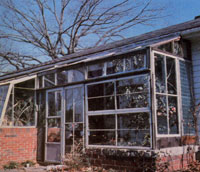
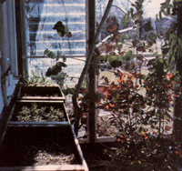

A little work and ingenuity, and you can have spring in January with...
Imagine a cold, windy midwinter day in a Boston suburb. Then picture yourself- in that chilly city and on that very January day-basking in the sun on your front steps and enjoying the first daffodil of the season . . . all as a result of some $100 worth of 2 X 4's, concrete blocks, and (if you don't want to raid the local dump) window sash.
Well, I used to have to pick my way up ice-rimmed brick steps and-when I threw open the front door-be ushered directly into the living room by a howling wind. In those days, everyone knew when I arrived.
I got tired of such chilly receptions, however, and the solution was obvious: I had to construct an entranceway. Fortunately, my front door faces south, and-since I like to grow plantsI decided to build a glass enclosure with a planting bed . . . just to see what would come up, as it were.
My project began with a simple design . . . and the execution wasn't much more complicated than the plan. I just built a raised bed of concrete block faced with brick. Then I constructed a framework of redwood 2 X 4's-spaced to correspond to the size of the available sash-and secured its uprights in the blocks and its crosspieces to the eaves. Once the glass was put in, the winter was shut out.
That's about all there was to the basic construction job, but I did add an extra wrinkle that you might want to consider: I made the whole addition demountable.
The section of "ceiling" above the planting bed swings back under the eaves . . . the steps remain covered . . . and the rest of the glass sash can be removed from the framework and stored. That way, each spring and summer, the majority of the entranceway is open to the pleasant weather.
A few winters back, in order to determine just how well the thermal mass provided by the raised planting bed in my sun-powered portico held the heat, I took temperature readings- before sunrise- through the month of January. I was pleased to discover that, though I hadn't yet sealed the joints to make the area draftproof, there was a consistent 10 to 20° temperature difference between the inside of the vestibule and the bonechilling out-of-doors.
(Of course, since I was measuring the addition's storage potential, the readings were taken before the morning sun hit the glass. The temperature difference on a bright mid-afternoon-when the portico is really gathering in the solar heat-can be much more extreme.)
Furthermore, in addition to the obvious, measurable results of glassing in my entranceway, I've found that the ground within the enclosed planting bed never freezes . . . the steps stay dry . . . only gentle breezes (often laden with the scent of spring flowers) waft into my protected living room when the door is opened . . . and my home's fuel consumption has, of course, dropped. Moreover, the greenhouse foyer is an ideal spot for the children to comfortably strip off their soggy winter outerwear.
Best of all, there's an extra benefit which warms my gardener's heart. Yes, I do have daffodils in January (miniature Narcissus asturiensis ) and they're just as breathtaking as their bigger, later relatives. And shortly thereafter come the cheerful white stars of Ipheion uniflorum- along with crocuses to supply splashes of color-followed by the spicy scent of wallflowers. I've also found that carnations, camellias, jasmine, aucuba, and hardy cyclamens can survive in the solar doorway. Even my delicate eucalyptus-which is now three winters oldis still going strong!
Around the first of March, the bitter cold of winter ends, and the gentle sun and cool nights are perfect for starting many types of seedlings. At that time of year the entranceway serves as a cold frame, and it has proved to be an excellent place to give all kinds of vegetables and flowers an early start.
I have lived with this unconventional home addition for nine years now . . . which is certainly enough time to evaluate and improve upon it. (This past fall, with fuel prices up again, I found it costefficient to install double-paned glass.) One of the structure's finest features- to my mind-is the surprisingly minor maintenance it requires: 15 minutes in the spring to take the glass out and 15 more in the chilly fall to put it back up. And that's all there is to it (except for the self-imposed and pleasant burden of selecting the next plant to experiment with).
Our northern winter has its place . . . and it's been my great pleasure to put it there! Spring is a much sweeter season . . . particularly in January.
|
 The solar entranceway shuts out winter winds. |
 Plants and vegetable starts thrive in the glass portico. |
|